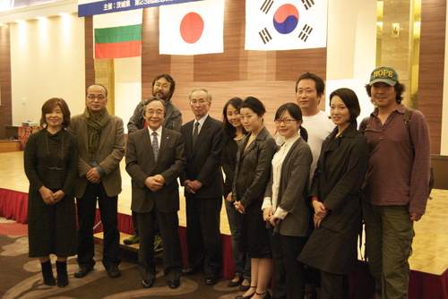
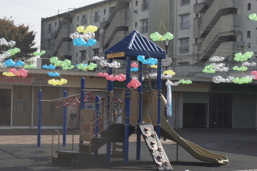
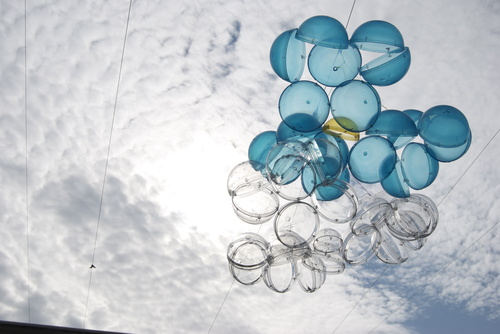

일본 답사일정을 정리해 보면 다음과 같다.
11월6일새벽6시 선잠이 들었다가 깨어 가방을 둘러매고 서둘러 공항에 갔다. 아들과 함께...
공항에서 김석용작가를 만나고 입국절차를 마치고 jal을 타고 하늘을 날았다.
나리타 공항에 마중나온 덕희(동경예술대학원생)와 인사를 나누고 그녀가 몰고온 대형버스에 올랐다.
4명이 타고 가긴엔 너무 컸다. 이노단지에 도착한 시간에 11시정도-탑사무실에서 아미씨와 시바타씨를 만나 인사를 나누었다.
점심식사를 하러 근처 식당에 갔다. 이대일과 김월식작가를 만나고 강우영을 만나고 단지를 둘러보며 몇몇 작품들을 둘러보았다.
세시가 되자 버스에 올라타고 2시간 동안 달려 미토시에 도착했다. 5시가 되자 어두워졌다. 이바타현에서 마련한'국제교류 프로젝트 리셉션'에 불가리아 작가둘과 한국종합예술대학 전통무용학과 학생들이 한복차림으로 서있었다.. 단상에는 태극기와 일장기, 불가리아 국기가 나란히 걸려있었다.

우리나라 도지사와 같은 현의 지사가 인사말을 하고 건배제의를 하고 음식을 나누어 먹었다. 맛있는 부페였다. 맨먼저 한국 SAP 소개에 나섰다. 주어진 시간은 5분 통역포함해서 10분...거의 완벽한 시간맞춤이었다. TAP에 참여중인 김월식,강우영,이대일이 함게 단상에 올라왔는데 한명한명 소개하지 못한것이 아쉽다. 이어서 불가리아에서 온 늙은 조각가의 작품소개가 이어졌다.한예종교수가 이끄는 한예종 전통무용학교학과를 소개하고 1인부채춤을 선보였다. 일본의 인간문화제격인사자춤 전수자의 공연...볼만했다.
다시 버스를 타고 토리데시로 돌아왔다. 호텔에서 체크인을 하고 김월식,이대일,김석용,희와 곧바로 작은 일본주점에 들려 그동안 못만난 회포를 풀었다. 그날 그렇게 취해서 잠들었다. 아들잠자리에 끼어서... (계속)

아침이다.아들이먼저 일어나 등교하는 자기또래아이들을 보았다고 했다. 호텔에서 주는 조식을 먹어보지 못하고 토리데역근처에서 아침식사를 했다. 토요일 아침 역앞이 분주하다. 어디선가 "박상!" 하고 부른다. 돌아보니 일본인 아줌마가 손짓을 한다.
작년에 자원봉사자로 활동하던 00이다. 나를 알아보는 그녀가 예뻤다. 다시 호텔로 와서 잠시 기다리다니 덕희가 왔다.
언덕을 하나 넘어서 한참을 걸어가니 어제 왔던 이노단지가 나왔다. 와타나베 교수가 마중을 한다. 우리는 서로 부둥켜안으며
인사를 나누고 스튜디오 하나하나를 관람했다. 스튜디오 입주작가들은 주로 대학을 갖 졸업한 작가들이다. 김월식의 조그만 입간판이 앙증맞게 서있다. 이름하여'주옥같은 써비스'를 해주고 선물로 자기 퍼포먼스에 출연해 달라는 요구가 적혀있다. 조그마한 수영장을 족탕으로 개조해서 주민들에게 족욕을 할수있도록 한 설치작품이 일품이다. 이노단지는 대단히 크다. 여기저기 곳곳에 작가들의 아지트가 있고 찾아보는 재미가 솔솔하다. 수미상의 작업은 석수시장에 만들어 놓았던 38가든 만큼이나 가슴 찡하다. 이대일은 여기저기에서 주은 가구들을 분해해서 커다란 무대(평상)을 만들어 주민들이 출연하는 공연을 만들어 냈다. 늦은 저녁까지 작품들을 꼼꼼히 감상하고 와타나베교수가 초대하는 저녁식사를 했다. 호텔로 돌아오는 길에 전철을 타고 집으로 향하는 와타나베 일행과 작별인사를 나누었다. 우리는 요꼬하마 트리엔날레를 관람할것이고 와타나베는 요꼬하마에서 주최하는 대안공간들의 밤샘토론에 참여하는것이 내일의 일정이다.(계속)

2008-11-10
saptap.egloos.com 에서 옮김